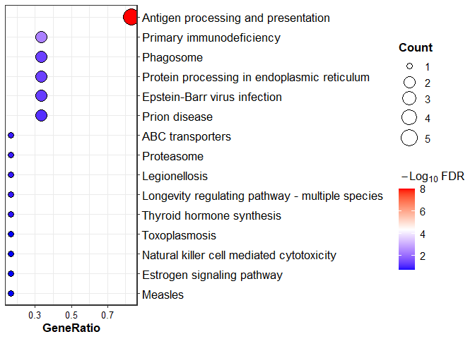
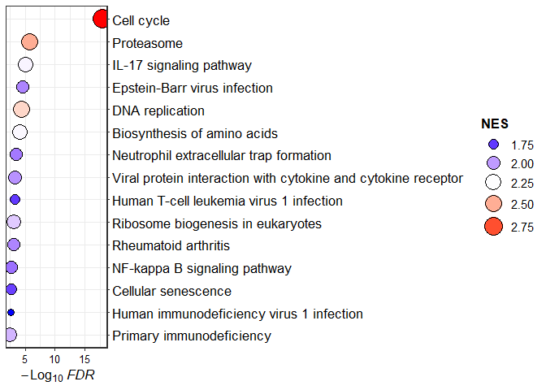
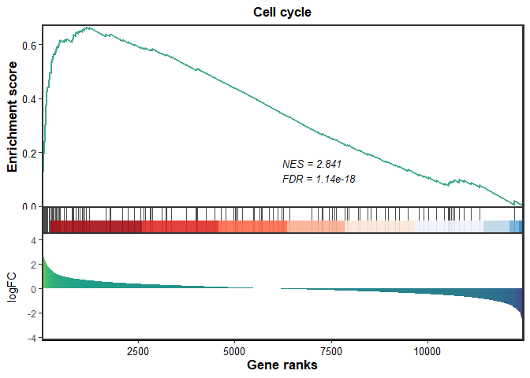
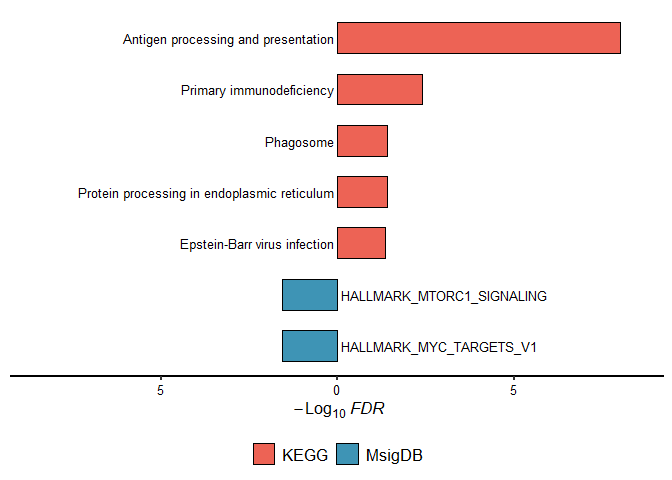
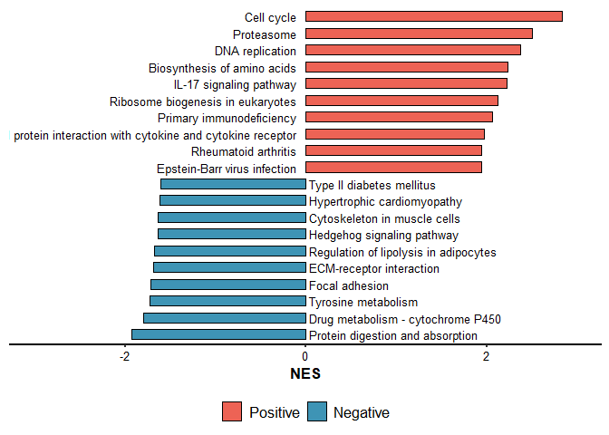

simpleEnrichr is package run simple enrichment analysis
Installation
You can install the development version of simpleEnrichr from Github with:
install.packages('remotes')
remotes::install_github('Moonerss/simpleEnrichr')Usage
Over-representative analysis
library(simpleEnrichr)
#>
#>
#> ##############################################################################
#> Pathview is an open source software package distributed under GNU General
#> Public License version 3 (GPLv3). Details of GPLv3 is available at
#> http://www.gnu.org/licenses/gpl-3.0.html. Particullary, users are required to
#> formally cite the original Pathview paper (not just mention it) in publications
#> or products. For details, do citation("pathview") within R.
#>
#> The pathview downloads and uses KEGG data. Non-academic uses may require a KEGG
#> license agreement (details at http://www.kegg.jp/kegg/legal.html).
#> ##############################################################################
genes <- c("CANX", "HSPA1B", "KLRC2", "PSMC6", "RFXAP", "TAP1")
res <- simple_ORA(genes, enrich.type = "KEGG")
#> ℹ Updating gene symbols...
#> Maps last updated on: Fri May 17 15:09:37 2024
#> ℹ Transforming "SYMBOL" to ENTREZID...
#> 'select()' returned 1:1 mapping between keys and columns
#> ℹ Performing KEGG enrichment...
#> ℹ 5 significant terms were detected...
#> ✔ Done!run ORA enrichment analysis one time!!!
res_all <- ORA_intergated(genes, enrich.type = c("KEGG", "MsigDB"))
#> ℹ Updating gene symbols...
#> Maps last updated on: Fri May 17 15:09:37 2024
#> ℹ Transforming "SYMBOL" to ENTREZID...
#> 'select()' returned 1:1 mapping between keys and columns
#> ℹ Performing KEGG enrichment...
#> ℹ 5 significant terms were detected...
#> ✔ Done!
#> ℹ Updating gene symbols...
#> Maps last updated on: Fri May 17 15:09:37 2024
#> ℹ Transforming "SYMBOL" to ENTREZID...
#> 'select()' returned 1:1 mapping between keys and columns
#> ℹ Performing MsigDB-"H" enrichment...
#> ℹ 2 significant terms were detected...
#> ✔ Done!
#> ℹ Final statistics ...
#> ℹ 7 significant terms were detected...
#> ✔ Done!
names(res_all)
#> [1] "KEGG" "MsigDB"Gene set enrichment analysis
data(geneList, package="DOSE")
fit <- simple_GSEA(geneList, enrich.type = "KEGG", gene.type = "ENTREZID")
#> ℹ Performing KEGG enrichment...
#> ℹ 55 significant terms were detected..
#> ✔ Done!run GSEA enrichment analysis one time!!!
fit_all <- GSEA_intergated(geneList, gene.type = 'ENTREZID', enrich.type = c("MsigDB", "KEGG"))
#> ℹ Performing MsigDB-"H" enrichment...
#> ℹ 28 significant terms were detected..
#> ✔ Done!
#> ℹ Performing KEGG enrichment...
#> ℹ 55 significant terms were detected..
#> ✔ Done!
#> ℹ Final statistics ...
#> ℹ 83 significant terms were detected...
#> ✔ Done!
names(fit_all)
#> [1] "MsigDB" "KEGG"Visualization
ORA_dotplot(res)
GSEA_dotplot(fit)
GSEA_rankplot(fit, Pathway.ID = 'hsa04110')
ORA_two_barplot(res_all$KEGG, res_all$MsigDB, Selct.P = 'FDR', obj.types = c("KEGG", "MsigDB"))
GSEA_two_barplot(fit, pos.top.pathway.num = 10, neg.top.pathway.num = 10)